Arcade Killer Instinct + Tekken
at Full Speed on Raspberry Pi 4
Complete build guide: Convert an Arcade1Up Street Fighter II Supreme cabinet to run arcade Killer Instinct 1 & 2 and Tekken 3/Tag at full speed on a 2GB Raspberry Pi 4. Every part, every wire, every script.
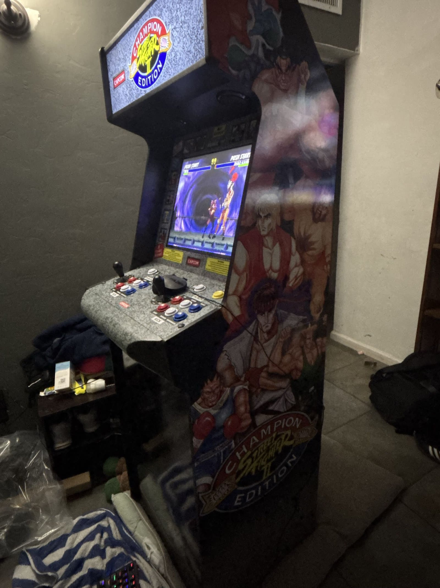
Table of Contents
Overview & Benchmarks
This isn't just a showcase—this is a complete working build. The arcade versions of Killer Instinct, Killer Instinct 2, Tekken 3, and Tekken Tag Tournament all run at full speed on a 2GB Raspberry Pi 4, inside a converted Arcade1Up Street Fighter II Champion Edition Supreme cabinet.
Out of the box, RetroPie couldn't touch these games. MAME 2016 ran Killer Instinct at about 30% speed and KI2 at about 23%. MAME 2010 and the old MAME 2003 wouldn't run KI at all, and Tekken Tag sat around 48 fps. What finally worked was compiling newer MAME 2003-Plus code as a separate emulator for Killer Instinct, and using ReSys12 (a Namco System 12 emulator) for Tekken.
Performance Benchmarks
All tests performed headless (no video/audio output) with frame limiter disabled. Target is 60 fps. Pi 4 Model B 2GB at stock 1.75 GHz, peak temperature 66°C, no throttling.
| Game | Emulator | FPS Range | Target | Status |
|---|---|---|---|---|
| Killer Instinct | lr-mame2003-plus-ki | 151–177 | 60 | ✓ PASS |
| Killer Instinct 2 | lr-mame2003-plus-ki | 147–185 | 60 | ✓ PASS |
| Tekken 3 | ReSys12 | ~230 | 60 | ✓ PASS |
| Tekken Tag | ReSys12 | ~430 | 60 | ✓ PASS |
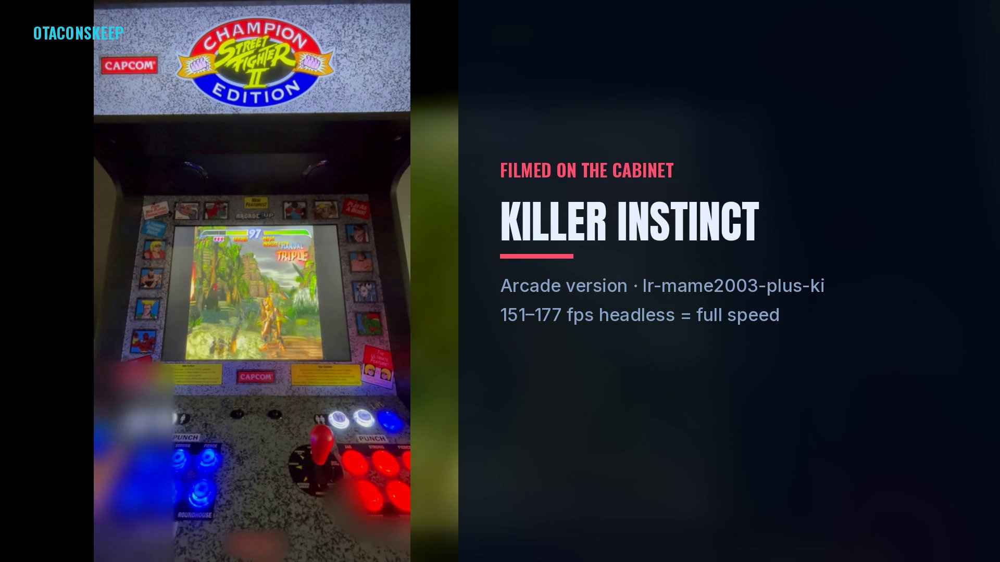
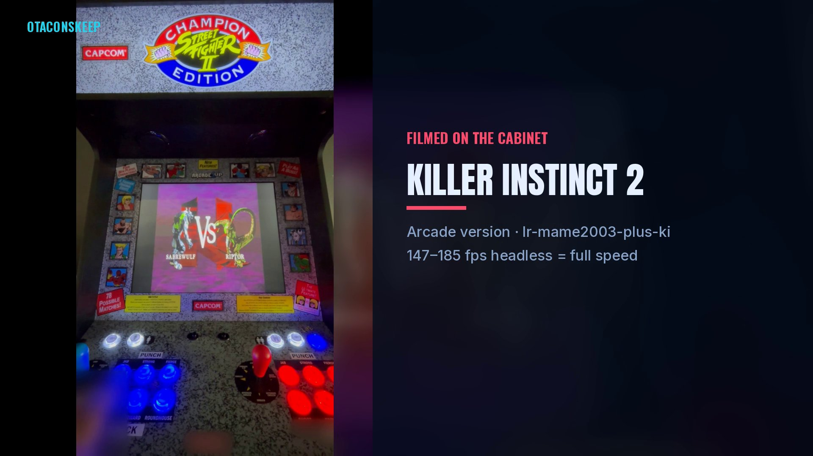
Parts List
This build reuses as much of the original Arcade1Up hardware as possible to save money. The stock encoder, mainboard, power toggle, volume buttons, and marquee light all stay in place and functional.
Required Components
- Raspberry Pi 4 Model B (2GB RAM) — The brain of the cabinet, running at 1.75 GHz stock
- EG STARTS 2-Player Arcade Kit — $44.99 on Amazon. Includes two oval-top joysticks, 16 LED buttons, 4 start/coin buttons, and two zero-delay USB encoders
- LVDS Controller Board — Converts HDMI from the Pi to drive the original DV190EOM-N12 19" panel. Check voltage requirements for your specific board
- DV190EOM-N12 Panel — Original 19" display from the Arcade1Up Supreme cabinet (kept from stock)
- ESP32 Development Board — Running WLED firmware to control coin-door LEDs
- USB-Powered Speakers — With 3.5mm audio input (or use a small amp board with the stock speakers)
- MicroSD Card — 32GB or larger for RetroPie
- USB-C Power Supply — Official Pi 4 power supply (5V, 3A minimum)
Reused from Stock Cabinet
- Original Arcade1Up Power Supply — Powers the stock mainboard, encoder, and marquee light
- Stock Mainboard & Encoder — Run the marquee light and provide mounting for power/volume switches
- Power Toggle Switch — Re-wired to Pi GPIO for safe shutdown
- Volume Buttons — Re-wired to Pi GPIO for ALSA volume control
- Marquee Light — Stays on stock wiring, works exactly as original
Wiring Guide
Follow this order for assembly:
- Unplug everything and open the back of the cabinet
- Swap in the new joysticks and LED buttons from the EG STARTS kit
- Wire each player's controls to their zero-delay encoder, then USB to the Pi
- Mount the Pi inside the cabinet
- Connect the LVDS board: HDMI from Pi, 30-pin cable to panel, power
- Move power toggle and volume wires to Pi GPIO pins
- Leave stock mainboard and encoder in place for marquee light
- Install ESP32 and LED strip behind coin doors, connect speakers
Power Overview
Every board gets its own power supply to prevent voltage issues:
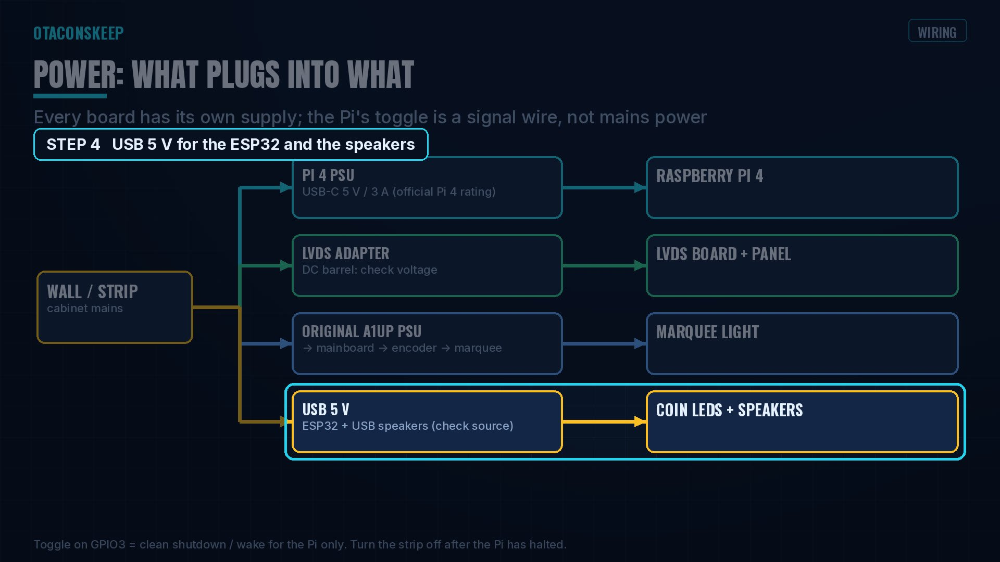
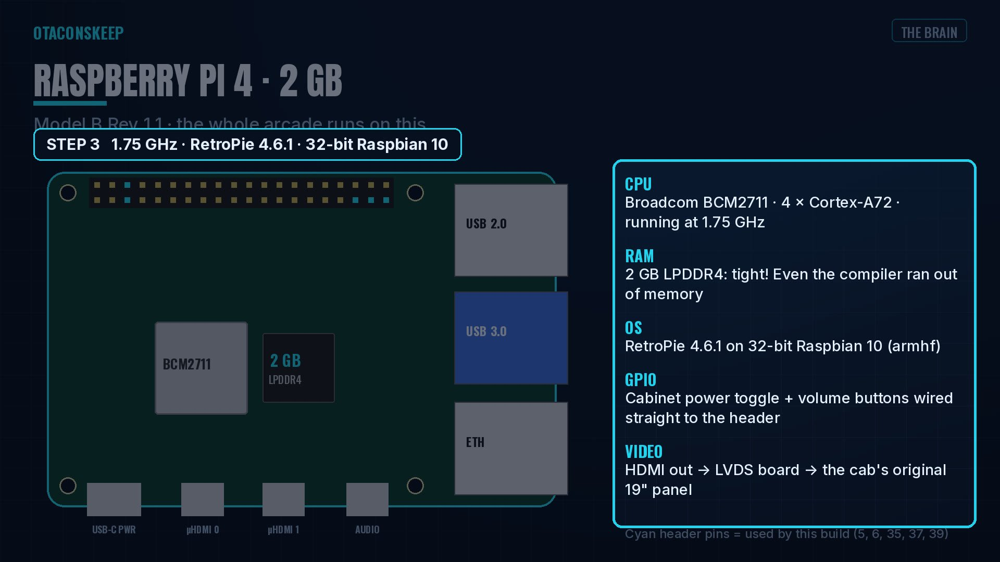
Control Encoder Wiring
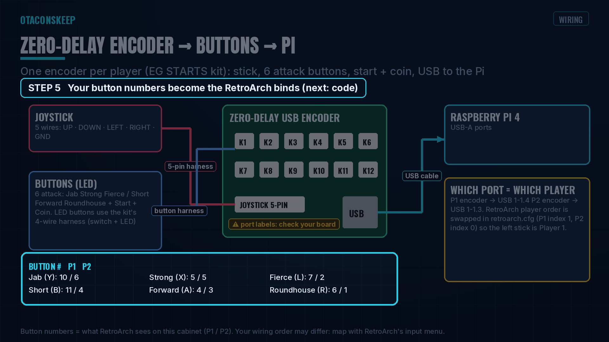
Note: Port labels differ between encoder batches. Document which button connects to which port for your RetroArch configuration. In this build, Player 1 is on USB port 1-1.4 and Player 2 is on 1-1.3.
Display Connection
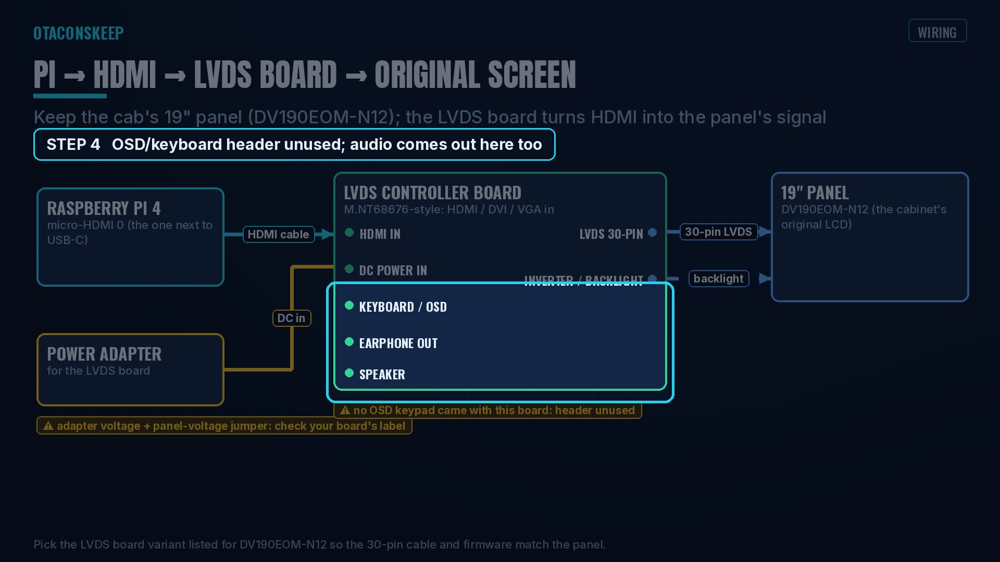
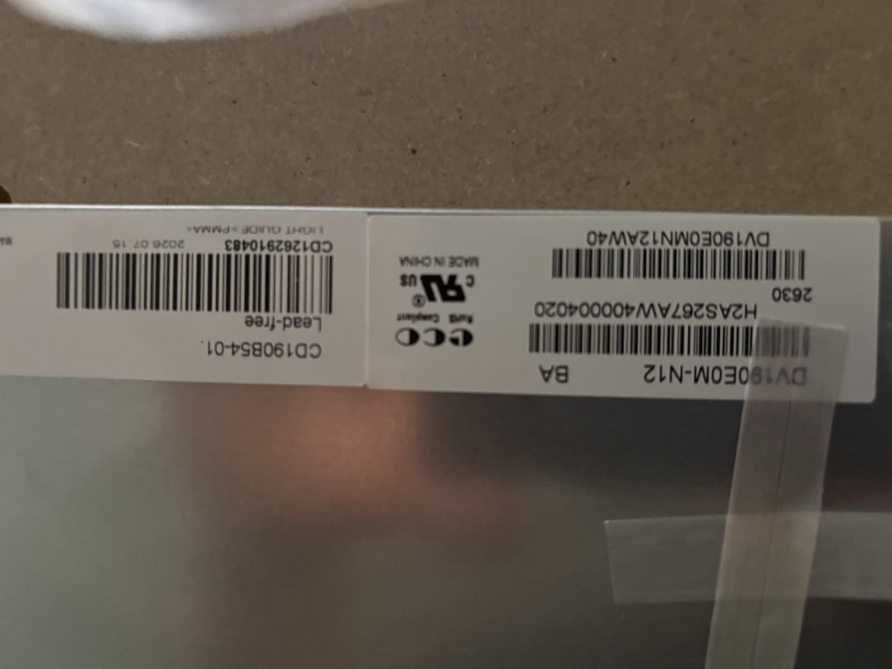
⚠ Important
Check the voltage printed on your LVDS board and verify the panel voltage jumper setting before powering up. Some boards require 5V, others 12V. Incorrect voltage will damage the board or panel.
Power Switch Wiring
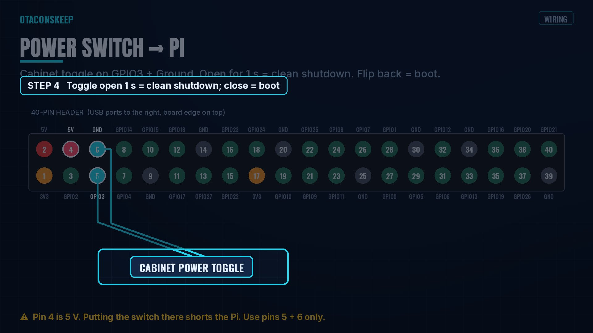
Opening the switch for 1 second triggers a clean shutdown. Closing it boots the Pi back up (GPIO3 wake-on-ground feature).
Volume Button Wiring
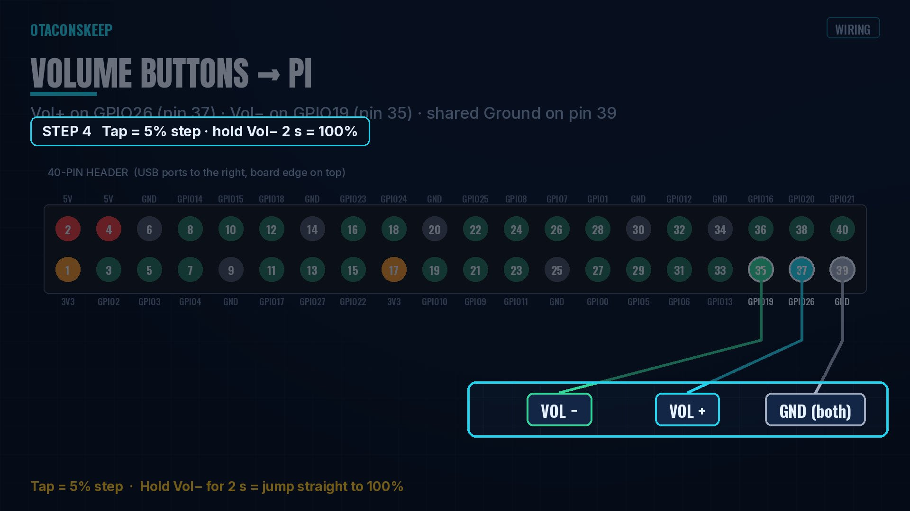
Stock Board Preservation
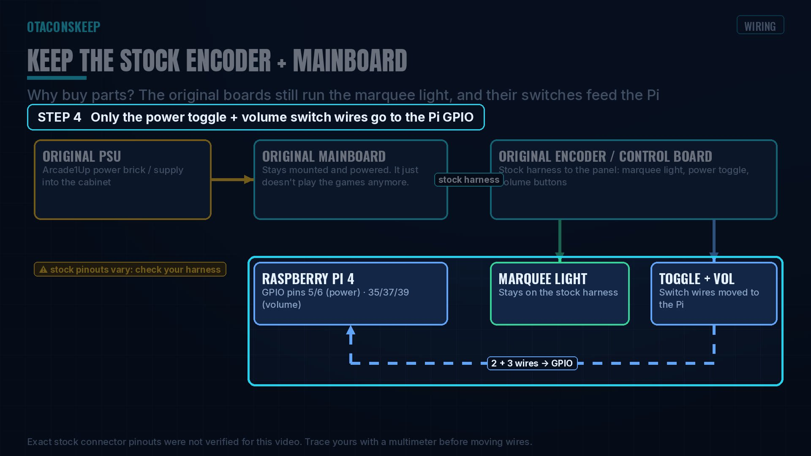
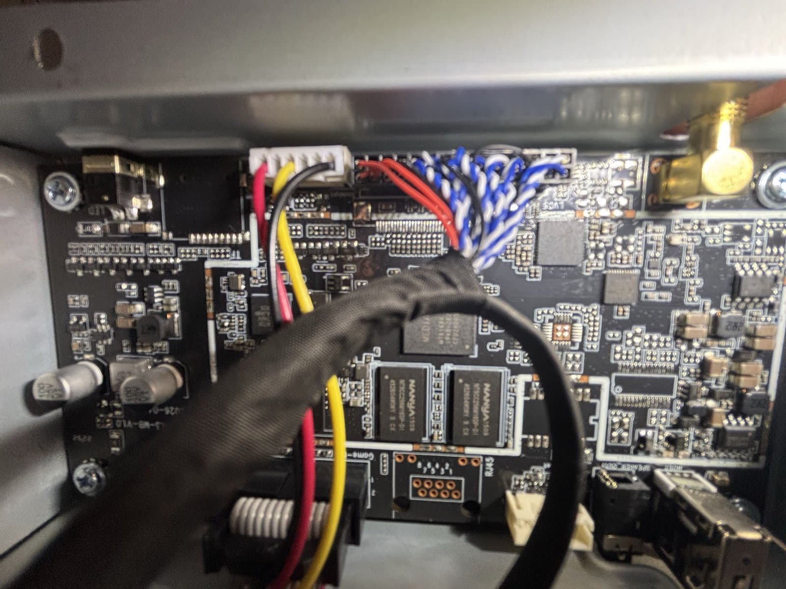
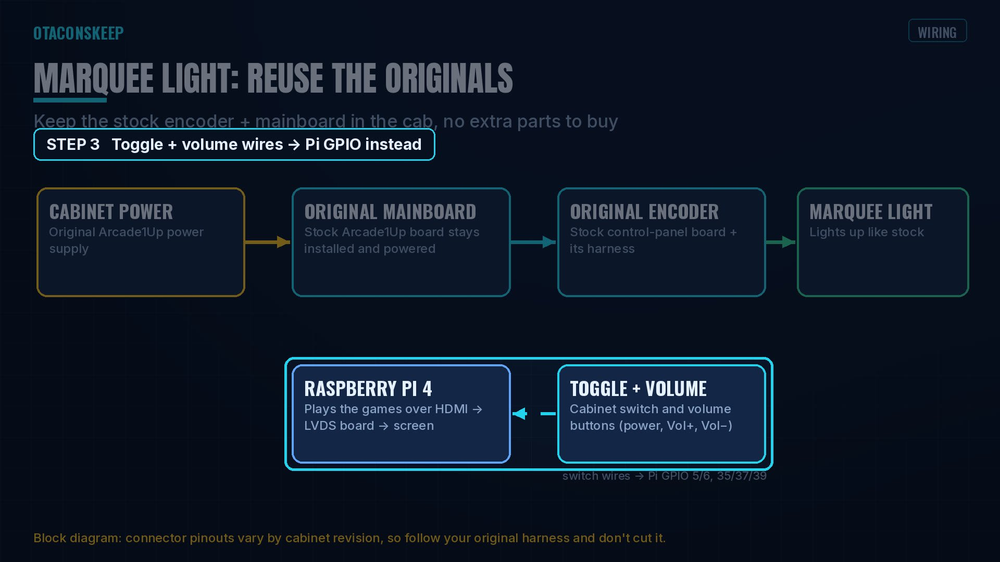
⚠ Verify Your Wiring
Connectors and wire colors vary by cabinet revision. Trace your power toggle, volume buttons, and marquee connections with a multimeter before making changes. Do not cut the stock harness.
Coin Door LEDs
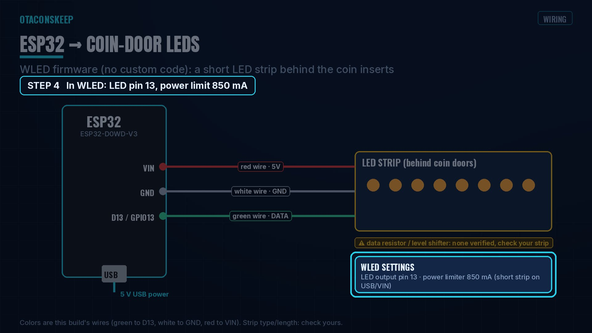
Flash WLED firmware to ESP32, connect to WiFi, set LED pin to 13, and limit power to 850mA for USB power. No code required—WLED handles everything through its web interface.
⚠ Level Shifter Recommended
Some LED strips require a level shifter or 330Ω resistor on the data line when driven from 3.3V GPIO. If LEDs don't respond, add one between ESP32 GPIO13 and the strip's data input.
Audio Path
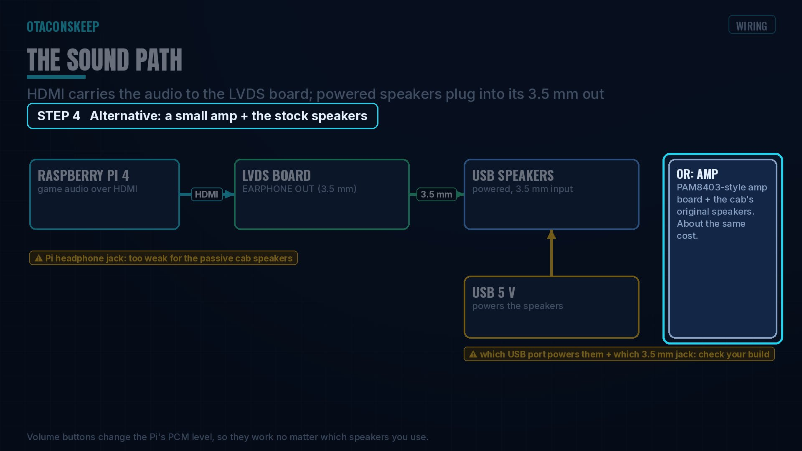
Software Setup
Start with RetroPie 4.6.1 32-bit (this build used the Retro Arcade Bliss image). Enable SSH and log in from your PC to perform these steps:
- Install power switch and volume control scripts
- Configure RetroArch controller bindings for both encoders
- Build the custom MAME 2003-Plus core for Killer Instinct
- Build ReSys12 emulator for Tekken
- Configure per-game emulator selection
- Add button remap for Killer Instinct
Power Switch Script
Monitors GPIO3 for the cabinet power toggle. Opening the switch for 1 second triggers a clean shutdown. Closing the switch boots the Pi (GPIO3 wake feature).
#!/usr/bin/env python3
# power_switch.py - cabinet ON/OFF toggle -> safe Pi shutdown
# Switch wired to GPIO3 (pin 5) and GND (pin 6). NEVER pin 4 (5V).
from gpiozero import Button
from signal import pause
from time import sleep
import subprocess
switch = Button(3, pull_up=True) # closed = ON (pin pulled to GND)
def switch_opened():
sleep(1) # must stay open for 1 second
if not switch.is_pressed: # still open? then power down
subprocess.run(["sudo", "shutdown", "-h", "now"])
switch.when_released = switch_opened
# Bonus: grounding GPIO3 wakes a halted Pi, so flipping
# the toggle back ON boots the cabinet again.
pause()⚠ Reference Listing
This script is a reference recreation using the actual pin assignments from the build, not a byte-for-byte copy from the cabinet. The logic and pins are correct.
Volume Control Script
Monitors GPIO26 (up) and GPIO19 (down) for cabinet volume buttons. Each tap adjusts ALSA PCM volume by 5%. Holding down for 2 seconds jumps to 100%.
#!/usr/bin/env python3
# gpio_volume.py - cabinet volume buttons -> ALSA "PCM" mixer
# Vol+ GPIO26 (pin 37) Vol- GPIO19 (pin 35) GND pin 39
from gpiozero import Button
from signal import pause
import subprocess
up = Button(26, pull_up=True, bounce_time=0.05)
down = Button(19, pull_up=True, bounce_time=0.05, hold_time=2)
held = False
def mixer(value):
subprocess.run(["amixer", "-q", "sset", "PCM", value])
def down_held(): # hold Vol- 2 s -> jump to 100%
global held; held = True; mixer("100%")
def down_released(): # quick tap -> down 5%
global held
if not held: mixer("5%-")
held = False
up.when_pressed = lambda: mixer("5%+")
down.when_held = down_held
down.when_released = down_released
pause()⚠ Reference Listing
This script is a reference recreation using the actual GPIO pins and logic, not a byte-for-byte copy from the cabinet.
Systemd Service Files
# /etc/systemd/system/power-switch.service
[Unit]
Description=Cabinet power toggle (safe shutdown)
After=multi-user.target
[Service]
ExecStart=/usr/bin/python3 /home/pi/power_switch.py
Restart=always
[Install]
WantedBy=multi-user.target# /etc/systemd/system/gpio-volume.service
[Unit]
Description=Cabinet volume buttons -> PCM mixer
After=sound.target
[Service]
ExecStart=/usr/bin/python3 /home/pi/gpio_volume.py
Restart=always
[Install]
WantedBy=multi-user.targetEnable Services
# 1. copy the scripts to the Pi
scp power_switch.py gpio_volume.py pi@<your-pi>:/home/pi/
# 2. install the two service files
sudo cp power-switch.service gpio-volume.service /etc/systemd/system/
# 3. turn them on now and on every boot
sudo systemctl daemon-reload
sudo systemctl enable --now power-switch gpio-volume
# 4. check they're running
systemctl status power-switch gpio-volume --no-pagerRetroArch Controller Configuration
Both zero-delay encoders appear as DragonRise gamepads. Player order is swapped so the left stick is Player 1. Because each encoder was wired differently, Player 2 gets custom button mappings.
# retroarch.cfg - two zero-delay (DragonRise) encoders
input_player1_joypad_index = "1" # P1 encoder = USB port 1-1.4
input_player2_joypad_index = "0" # P2 encoder = USB port 1-1.3 (js0)
# P1 uses the shared DragonRise autoconfig file:
# y=10 Jab x=5 Strong l=7 Fierce
# b=11 Short a=4 Forward r=6 Roundhouse
# P2 is wired differently, so it gets per-port binds:
input_player2_y_btn = "6" # Jab
input_player2_x_btn = "5" # Strong
input_player2_l_btn = "2" # Fierce
input_player2_b_btn = "4" # Short
input_player2_a_btn = "3" # Forward
input_player2_r_btn = "1" # Roundhouse
# + P2 left/right and up/down axis flips (match your stick)Killer Instinct Build
The key to running Killer Instinct at full speed is building a newer version of MAME 2003-Plus from source. The stock RetroPie cores are too old. This creates a separate core specifically for KI, leaving the standard MAME cores untouched.
⚠ Performance Source
The speed improvement comes from newer MAME 2003-Plus code, not from a dynamic recompiler. Building from the current MAME 2003-Plus master branch (tested at commit 2a60eda) enables significant performance improvements in the KI emulation.
Build Instructions
# 1. get the newer MAME 2003-Plus source
cd ~ && git clone https://github.com/libretro/mame2003-plus-libretro.git
cd mame2003-plus-libretro # built from master @ 2a60eda
# 2. compile ON the Pi - one job at a time
make -j1 platform=rpi4 # -j3 ran OUT OF MEMORY on 2 GB
# 3. install as its OWN core (stock lr-mame2003-plus untouched)
sudo mkdir -p /opt/retropie/libretrocores/lr-mame2003-plus-ki
sudo cp mame2003_plus_libretro.so \
/opt/retropie/libretrocores/lr-mame2003-plus-ki/
# 4. add it to /opt/retropie/configs/arcade/emulators.cfg (one line):
lr-mame2003-plus-ki = "/opt/retropie/emulators/retroarch/bin/retroarch
-L /opt/retropie/libretrocores/lr-mame2003-plus-ki/mame2003_plus_libretro.so
--config /opt/retropie/configs/arcade/retroarch.cfg %ROM%"
# 5. ROMs in ~/RetroPie/roms/arcade/
# kinst.zip + kinst/kinst.chd kinst2.zip + its CHD folderNote: Compilation takes several hours on a Pi 4. Using -j1 (single job) is slower but necessary—parallel builds with -j3 ran out of memory on the 2GB model.
Per-Game Emulator Selection
Tell RetroPie which games use the custom KI core. You can edit the config file directly or use the runcommand menu at game launch.
# /opt/retropie/configs/all/emulators.cfg (back it up first!)
arcade_kinst = "lr-mame2003-plus-ki" # Killer Instinct
arcade_kinst2 = "lr-mame2003-plus-ki" # was lr-mame2016
arcade_tekken3 = "resys12" # was lr-mame2010
arcade_tektagt = "resys12" # was lr-mame2010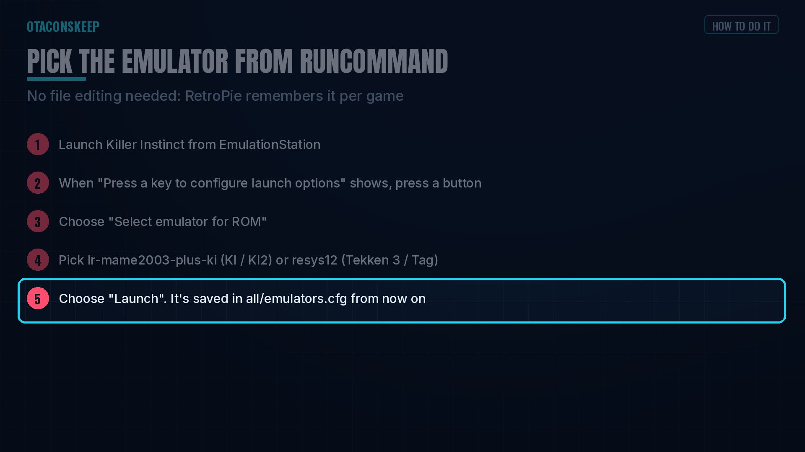
Button Remap for Street Fighter Layout
On a Street Fighter panel, KI's Strong and Forward buttons end up swapped. These per-game remap files fix the layout for both players.
# /opt/retropie/configs/arcade/MAME 2003-Plus/kinst.rmp
# (kinst2.rmp is the same) - RetroArch per-game remap
# Swap Strong (RetroPad X) and Forward (RetroPad A), both players
input_player1_btn_x = "8"
input_player1_btn_a = "9"
input_player2_btn_x = "8"
input_player2_btn_a = "9"
# Undo: move kinst.rmp / kinst2.rmp out of the folder⚠ Reference Listing
This remap file is a reference recreation with the correct button values, not a byte-for-byte copy from the cabinet.
Create both kinst.rmp and kinst2.rmp with identical contents. RetroArch loads them automatically for their respective games. Delete to restore standard layout.
Tekken Setup
Tekken 3 and Tekken Tag Tournament are Namco System 12 games. They run on ReSys12, an open-source System 12 emulator originally made for PS Vita, ported to Linux with an SDL2 front-end.
⚠ Source Availability
The ReSys12 Linux port used in this build is not publicly available. The base ReSys12 emulator is open-source (GPL-3), but the specific Linux front-end with SDL2 and custom button mappings used here is a private port. This guide documents the approach for reference.
Build Process
# Tekken 3 + Tekken Tag: ReSys12 (Namco System 12), GPL-3
mkdir -p ~/resys12-build && cd ~/resys12-build
git clone https://github.com/Reyanon/ReSys12.git # built @ fc52321
# the Vita front-end is swapped for a small Linux/SDL2 one
# (main_linux.c + rs12_threads_linux.c + Makefile in ./port)
cd port && make RS12=../ReSys12 # -> ./resys12
sudo mkdir -p /opt/retropie/emulators/resys12
sudo cp resys12 /opt/retropie/emulators/resys12/
# arcade/emulators.cfg
resys12 = "/opt/retropie/emulators/resys12/resys12 %ROM%"
# ROM sets: tekken3.zip (tekken3je1) tektagt.zip (tektagtuc1)
# test speed: resys12 tektagt.zip --bench 3000⚠ Reference Listing
This build script is a reference showing the general approach and correct repo/commit. The Linux port files (main_linux.c, Makefile) are not included.
Button layout follows Tekken 2 convention: punches on top row, kicks on bottom row, Tag on Fierce button.
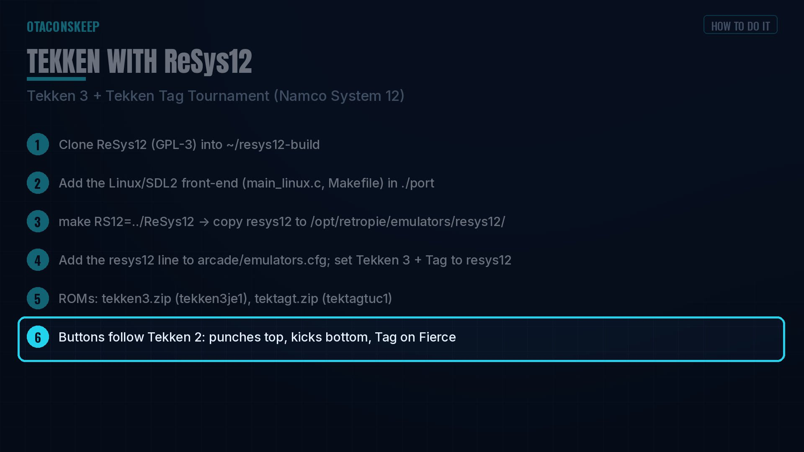
Download All Files
All scripts, configuration files, and diagrams are available for download:
Python Scripts
- • power_switch.py — Power toggle GPIO monitor
- • gpio_volume.py — Volume button GPIO control
Systemd Services
- • power-switch.service — Power script service unit
- • gpio-volume.service — Volume script service unit
- • enable.sh — Service installation commands
Emulator Setup
- • ki_build.sh — MAME 2003-Plus KI core build script
- • resys12_build.sh — ReSys12 build reference
- • emulators.cfg — Per-game emulator assignments
Configuration Files
- • retroarch_binds.cfg — Controller button mappings
- • kinst.rmp — KI button remap for SF layout
Wiring Reference Diagrams
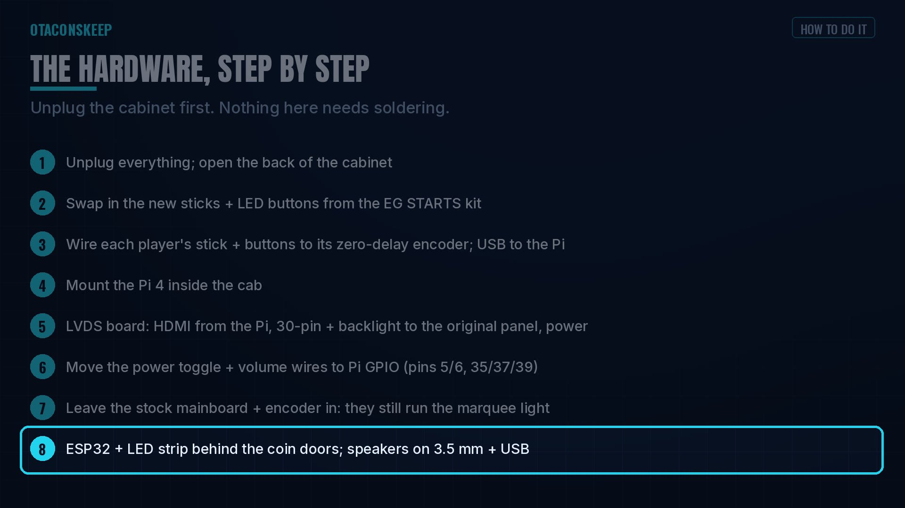
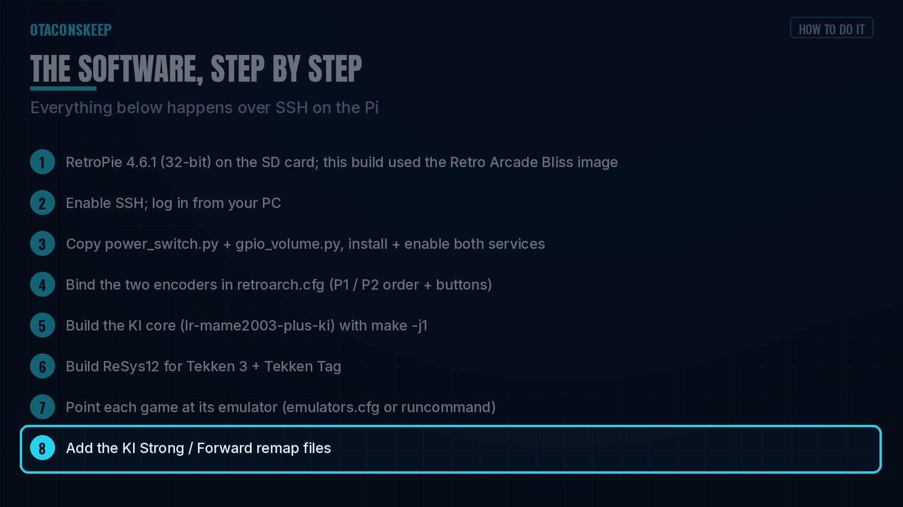
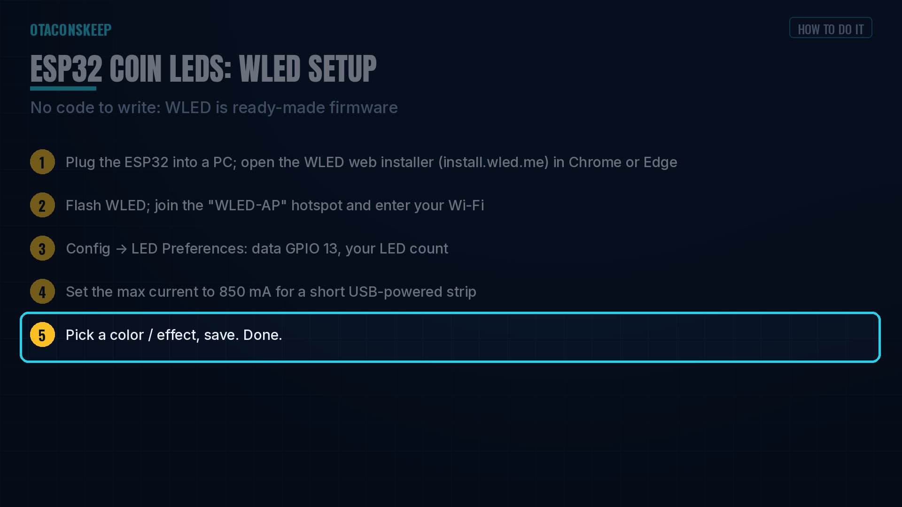
Build Specifications: Raspberry Pi 4 Model B Rev 1.1, 2GB RAM, 1.75 GHz stock, RetroPie 4.6.1, 32-bit Raspbian 10. Headless benchmarks with no throttling, peak 66°C. MAME 2003-Plus master @ 2a60eda, ReSys12 @ fc52321. EG STARTS 2-player kit, LVDS controller for DV190EOM-N12 panel, ESP32 with WLED, USB speakers.
Last updated: November 2026 • Back to Otaconskeep